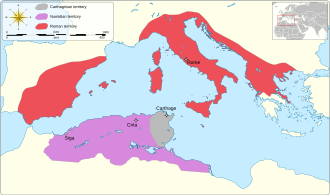
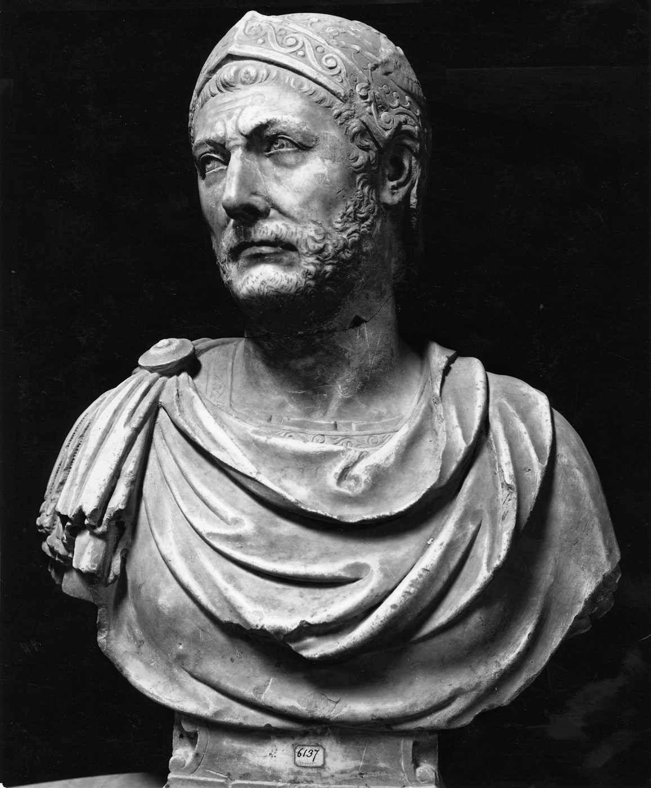

The downfall of Carthage
After the war, Carthage had to make a lot of concessions to Rome. Specifically, they went into massive debt with Rome, which also hurt their military, as a lot of their soldiers were mercenaries they could no longer afford, and they had to give up most of the territory they held. This led to a not so subtle decline in Carthage, they went from being one of the greatest superpowers on the planet, to not even worth bringing up in conversation. About fifty years after the Second Punic War, Carthage and Rome would go to war for the last time. The Third Punic War was, frankly, a one-sided slaughter; the Carthaginians didn’t stand a chance and were just trying to hold out. The Third Punic War ended in the complete destruction of Carthage and a very powerful Rome.
Where was Hannibal?
After the Second Punic War, Hannibal left Carthage for many reasons, partly because he had grown tired of the politics and, to a degree, because he was forced out. Hannibal moved around a lot, but he was constantly being hunted by Rome because they still considered him a criminal due to the Second Punic War. A little bit later, Scipio was forced out of Rome for political reasons; a lot of ambitious people wanted his spot, and he was worried about attempts on his life. While it is not fully confirmed, a lot of people, myself included, believe that during their travels, at some point Hannibal and Scipio met each other and talked. During this conversation, Hannibal said that the top three military minds in history were Alexander the Great, Pyrrhus of Epirus, and himself in third. When Scipio asked what if Hannibal had beaten Scipio, Hannibal supposedly responded that if he had beaten Scipio, he would be the greatest mind in history. Shortly after this conversation, Hannibal took his life by drinking poison, in his final note stating the reason for doing so was to “alleviate the Romans of the fear that has plagued them for so long, as they can’t even wait for an old man's death”.
